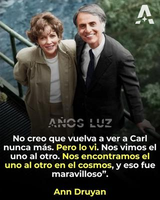

Este 20 de diciembre, ateos, escépticos y amantes del pensamiento racional, conmemoramos el adiós definitivo del gran Carl Edward Sagan, científico apasionado, divulgador brillante, y ser humano profundamente comprometido con la honestidad intelectual. Su mensaje —sereno, lúcido y siempre guiado por la evidencia— sigue siendo fuente de inspiración en un mundo que todavía lucha por liberarse de supersticiones, dogmas y falsas certezas.


Nacido en Nueva York el 9 de noviembre de 1934, Carl no sólo nos enseñó astronomía o cosmología. Desde su postura escéptica nos enseñó no qué pensar, sino cómo pensar. A su llegada a la Universidad Cornell en 1968, hizo del pensamiento crítico no sólo una asignatura académica, sino un ejercicio vital, casi ético. Para él, cuestionar no era un acto de rebeldía, sino de amor: amor por la verdad, por la belleza del cosmos y por la capacidad humana de comprenderlo. En «Cosmos: un viaje personal», mítica serie de 1980 que marcó a generaciones, Sagan nos recordó que somos «una forma en la que el cosmos se conoce a sí mismo», por lo que nuestra responsabilidad es vivir con los ojos abiertos, sin recurrir a consuelos ilusorios.
Por eso su figura es tan importante para quienes valoramos la razón por encima del dogma; no porque él fuera infalible, sino porque encarnó una rara valentía: la de aceptar la realidad tal como es, incluso cuando nos disgusta. Su fallecimiento, ocurrido el 20 de diciembre de 1996, cuando tenía sólo 62 años, no lo convirtió en mito; lo reafirmó como modelo de integridad intelectual.
Carl conoció a su esposa, Ann Druyan, en 1977, mientras trabajaban juntos en el Disco de Oro de la sonda espacial Voyager, un proyecto de la NASA destinado a idear el formato y contenido de un mensaje que se enviaría al espacio. Ann estuvo a cargo de crear la lista de reproducción musical y el «ensayo sonoro», mientras que Carl presidió el comité encargado de la selección del contenido. La pareja se enamoró mientras trabajaba en el proyecto, que incluía una selección de música, sonidos de la Tierra y mensajes en 55 idiomas.
Ann, escritora y productora especializada en cosmología y ciencia popular, se desempeñó después como una de los guionistas de la serie «Cosmos: un viaje personal», y de «Cosmos: una odisea de tiempo y espacio». Ella es atea, y en 2006 editó y publicó «La diversidad de la ciencia: una visión personal de la búsqueda de Dios», que es una recopilación póstuma de las intervenciones de Sagan en las Conferencias Gifford sobre Teología Natural, a las que acudió como conferencista invitada en 1985.
Ann Druyan no sólo compartió con Carl Sagan parte importante de su vida, sino el amor por la ciencia y la lucidez, y siete años después de la partida de su esposo, en una entrevista para la revista Skeptical Inquirer, manifestó desde el duelo más honesto y más humano, las siguientes palabras que son un recordatorio de que no necesitamos el consuelo de ficciones para encontrar sentido, profundidad y gratitud en la existencia:
«Cuando mi esposo murió, como era tan famoso y conocido por no ser creyente, mucha gente venía a mí (aún pasa, a veces) y me preguntaba si Carl cambió de idea al final y se convirtió a una creencia en el más allá. También me preguntan con frecuencia si creo que lo veré de nuevo. Carl enfrentó su muerte con un coraje incansable y nunca buscó refugio en ilusiones. La tragedia era que sabíamos que no volveríamos a vernos. No espero reunirme nunca con Carl. Pero lo grandioso es que cuando estuvimos juntos, por casi veinte años, vivimos con una intensa valoración de lo breve y preciosa que es la vida. Nunca trivializamos el significado de la muerte fingiendo que no era una despedida definitiva. Cada momento particular en que estuvimos vivos y estuvimos juntos fue milagroso, pero no milagroso en el sentido de inexplicable o sobrenatural… Que el puro azar pudiera ser tan generoso y tan amable… Que pudiéramos encontrarnos el uno al otro, como escribió Carl tan bellamente en Cosmos, «en la vastedad del espacio y en la inmensidad del tiempo»… Que pudiéramos estar juntos durante veinte años. Eso es algo que me sostiene y es mucho más significativo. La forma en que me trató y yo lo traté a él, la forma en que nos cuidamos el uno al otro y a nuestra familia, mientras vivió. Eso es algo mucho más importante que la idea de que lo veré algún día. No creo que vuelva a ver nunca a Carl. Pero lo vi. Nos vimos el uno al otro. Nos encontramos el uno al otro en el cosmos, y eso fue maravilloso.»
—Ann Druyan
[Godless Freeman]
[Crédito de imagen: Años Luz]
Referencia:
https://culturacolectiva.com/tecnologia/ann-druyan-carta-de-despedida-carl-sagan
Comentarios
Comments powered by Disqus